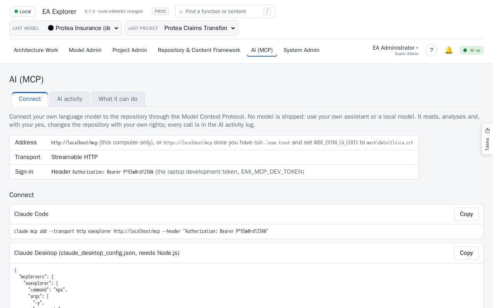

Connect your AI assistant
For: Practising architects, Developers
Your own AI app talks to EA Explorer through MCP, as you, with your permissions.

#/mcpWhy do this
EA Explorer has no AI of its own; it lets the assistant you already use connect through the Model Context Protocol and act with your rights, no more. Once connected, you can explore, analyse and draft in plain language. See AI in EA Explorer.
Using AI in EA Explorer is always your assistant working with your rights: it reads and drafts, you review and commit. Used well, it takes the slow parts of architecture work (searching, cross-checking, first drafts) so you spend your time on judgement.
In TOGAF terms: Outside the standard's method, but in service of it: AI speeds up gathering content (phases B to D), analysis (E) and reporting to stakeholders, with people reviewing every change. See EA Explorer and the TOGAF Standard.
The goal: Your own AI assistant can work on the repository as you.
Before you start MCP is switched on in your installation (System Admin › Settings › System settings), and your AI app can use MCP connectors.
Steps
- Open AI (MCP) › Connect your AI assistant and copy the address.
- In your AI app's connector settings, add it. When the browser asks, sign in to EA Explorer as yourself.
- Ask something simple: list the models I can see.
What to know
- It works as you: it reads only what you may read and changes only what you may change.
- Anything that changes something is shown first and done only after your yes; the model is tagged first.
- Every call is in AI (MCP) › My AI activity.
- AI (MCP) › What it can do lists everything it can do, as tiles.